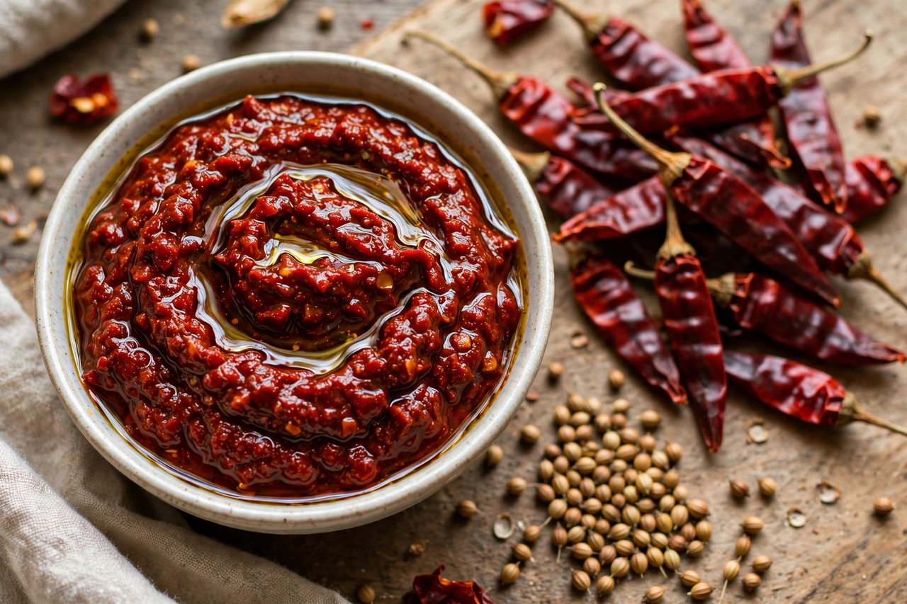

| Harissa | |
|---|---|
 Harissa, the fiery paste of the Maghreb | |
| Type | Chilli paste / condiment |
| Place of origin | Tunisia (Maghreb) |
| Main ingredients | Red chillies, garlic, coriander, caraway, olive oil |
| Heat | Hot; varies widely by preparation |
| Recognition | Inscribed by UNESCO (2022) on the Representative List of the Intangible Cultural Heritage of Humanity (Tunisian harissa) |
Harissa (Arabic: هريسة, harīsa, from the root "to crush/pound") is a hot chilli pepper paste, native to the Maghreb, whose main ingredients are roasted or dried red peppers, Baklouti peppers, spices such as coriander and caraway, garlic paste, and olive oil. It is Tunisia's signature condiment — sometimes called the country's national pepper sauce — and is used throughout North Africa and the Middle East.
Chillies arrived in North Africa from the Americas via Spain in the sixteenth century and flourished in Tunisia's Cap Bon peninsula. Pounded pepper pastes developed into harissa, traditionally made by hand with a mortar or ground between stones. In December 2022, UNESCO inscribed "Harissa, knowledge, skills and culinary and social practices" on its Representative List of the Intangible Cultural Heritage of Humanity.
Harissa flavours couscous, soups, stews, and grilled meats, is stirred into the chickpea soup lablabi, spread in sandwiches and brik pastries, and served as a table condiment alongside bread and olive oil. Regional variations range from smoky, sun-dried versions to rose harissa scented with petals. Like other great hot preparations, from South Asian achar to Mexican sauces, it balances heat with spice, acidity, and fat.
Canned and jarred harissa — brands such as Le Phare du Cap Bon are exported worldwide — has made the paste a global pantry staple, appearing in fusion cooking far beyond its Maghrebi origins, though connoisseurs insist freshly pounded harissa is superior.